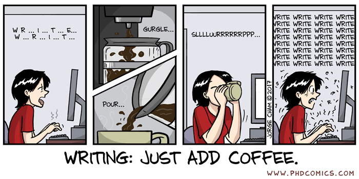

Links to online collections of my papers:
Journal Papers
Gravitational Waves
- "High-precision source characterization of intermediate mass-ratio black hole coalescences with gravitational waves: The importance of higher-order multipoles", Tousif Islam, Scott Field, Carl-Johan Haster & Rory Smith; arXiv:2105.04422 [gr-qc] [Submitted to PRL]
- "Eccentric binary black hole surrogate models for the gravitational waveform and remnant properties: comparable mass, nonspinning case", Tousif Islam, Vijay Varma, Jackie Lodman, Scott E. Field, Gaurav Khanna, Mark A. Scheel, Harald P. Pfeiffer, Davide Gerosa, and Lawrence E. Kidder; PPhys. Rev. D 103, 064022 (2021); arXiv:2101.11798 [gr-qc]
- "Improved analysis of GW190412 with aprecessing numerical relativity surrogate waveform model", Tousif Islam, Scott Field, Carl-Johan Haster & Rory Smith; arXiv:2010.04848 [gr-qc] [Accepted in PRD]
- "Testing the "No-hair" nature of binary black holes using the consistency of multipolar gravitational radiation", Tousif Islam, Ajit K. Mehta, Abhirup Ghosh, Vijay Varma, P. Ajith & B. S. Sathyaprakash; Phys. Rev. D 101, 024032 (2020); arXiv:1910.14259 [gr-qc]
Beyond General Relativity
- "Testing Modified gravity with the Acceleration Relations in the Milky Way", Tousif Islam and Koushik Dutta, Phys. Rev. D 101, 084015 (2020); arXiv:1911.11836 [astro-ph.GA]
- "Enigmatic Velocity Dispersions of Ultra-Diffuse Galaxies in Light of Modified gravity Theories and Radial Acceleration Relation", Tousif Islam, Phys. Rev. D 102, 024068 (2020); arXiv:1910.09726 [gr-qc]
- "Modified Gravity Theories in Light of the Anomalous Velocity Dispersion of NGC1052-DF2", Tousif Islam and Koushik Dutta, Phys. Rev. D 100, 104049 (2019); arXiv:1908.07160 [gr-qc]
- "Globular clusters as a probe for Weyl Conformal Gravity", Tousif Islam, Monthly Notices of the Royal Astronomical Society, Volume 488, Issue 4, October 2019; arXiv:1811.00065 [gr-qc]
- "Testing Weyl Gravity at Galactic and Extra-galactic scales", Tousif Islam and Koushik Dutta, Phys. Rev. D 98, 124012 (2018); arXiv:1808.06923 [gr-qc]
Masters Thesis